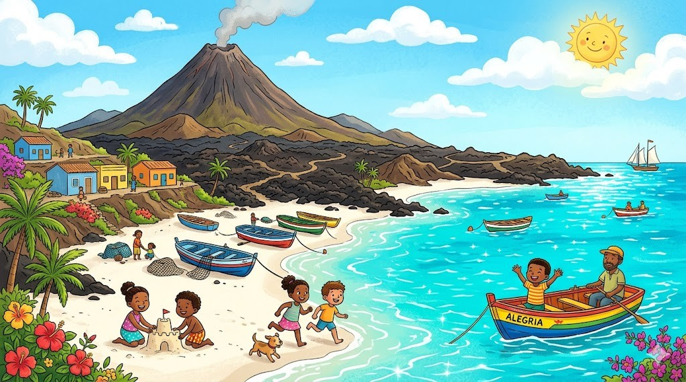
Hier stehen die wichtigsten Daten zu deinem Land. In der App baust du daraus deinen eigenen Steckbrief.
| Hauptstadt | Praia |
| Kontinent | Afrika (Inseln im Atlantik) |
| Sprache | Portugiesisch und Kreol |
| Währung | Kap-Verde-Escudo |
| Einwohner | etwa 600.000 Menschen |
| Fläche | rund 4.000 km² (verteilt auf viele kleine Inseln) |
| Großer Berg | Pico do Fogo, rund 2.829 m |
| Nachbarländer | eine Inselgruppe im Atlantik, westlich von Afrika, nahe bei Senegal |
In Kap Verde gibt es viele berühmte Orte. Diese vier solltest du kennen.
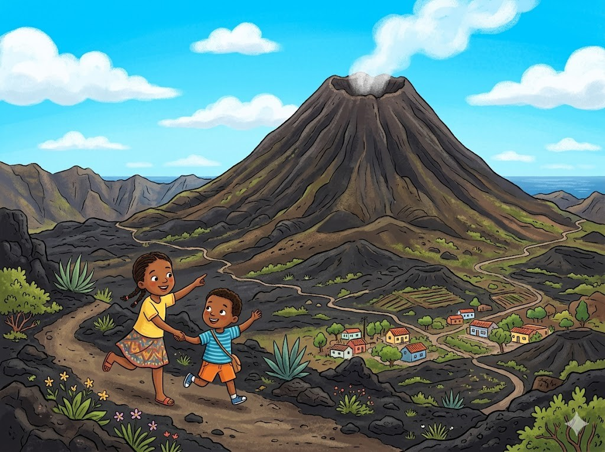
Der Vulkan Pico do FogoDer Pico do Fogo ist ein großer Vulkan. Er ist der höchste Berg von Kap Verde. Der Vulkan ist noch nicht erloschen. Vor einigen Jahren ist er zuletzt ausgebrochen. Rund um den Berg ist der Boden schwarz von Lava.
Grüne Wörter für die AppPico do FogoVulkanhöchste BergausgebrochenLava
Die Strände von SalDie Insel Sal hat lange weiße Strände. Das Wasser ist türkisblau und ganz klar. Viele Urlauber kommen hierher zum Baden. Auf Sal gibt es auch ein Salzbecken. Im salzigen Wasser kann man ganz leicht treiben.
Grüne Wörter für die AppSalweiße SträndetürkisblauBadenSalzbecken
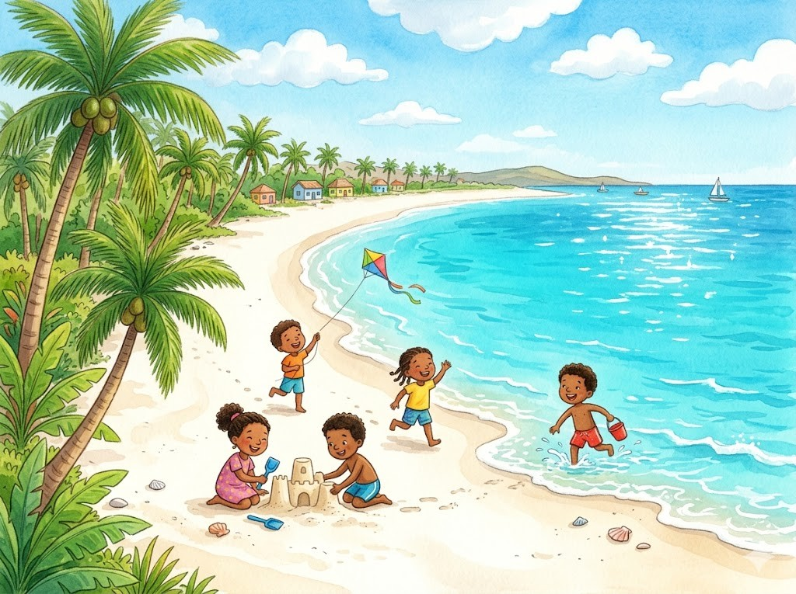
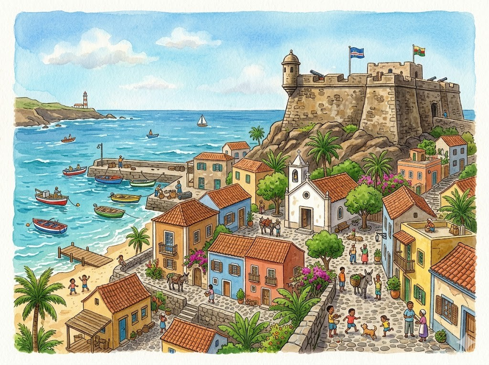
Die Altstadt Cidade VelhaCidade Velha ist die älteste Stadt von Kap Verde. Hier bauten vor langer Zeit Menschen aus Portugal eine Siedlung. Man sieht noch eine alte Festung und eine Kirche. Cidade Velha gehört heute zum Welterbe. Viele Besucher schauen sich die Stadt an.
Grüne Wörter für die AppCidade Velhaälteste StadtPortugalFestungWelterbe
Die Musik MornaAuf Kap Verde lieben die Menschen Musik. Eine besondere Musik heißt Morna. Sie ist langsam und ein bisschen traurig. Dazu spielt man oft Gitarre. Die Morna gehört zum Welterbe der Musik.
Grüne Wörter für die AppMusikMornalangsamGitarreWelterbe
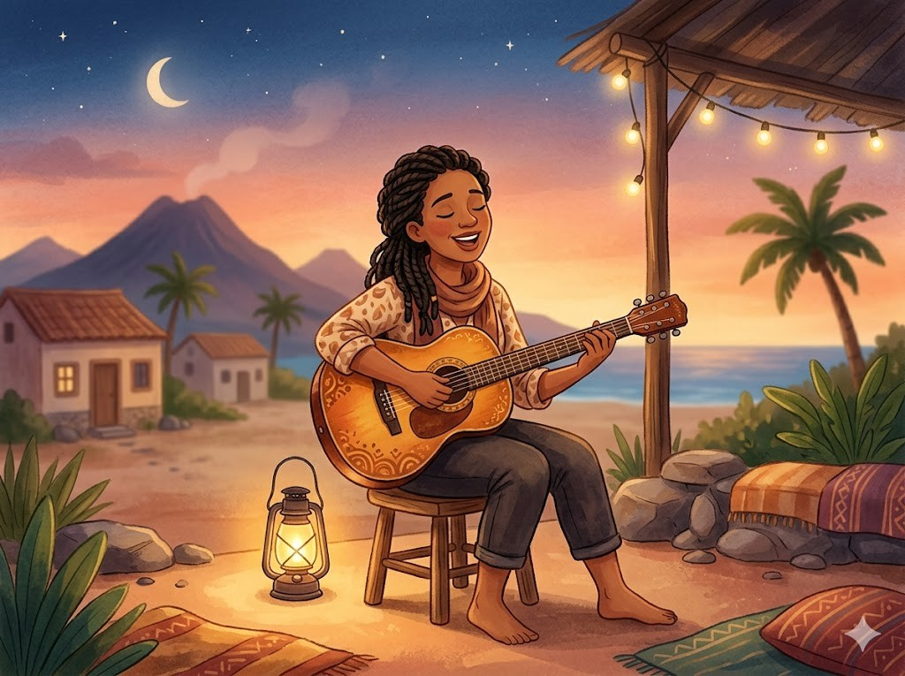
Diese Tiere leben in Kap Verde und sind ganz besonders.
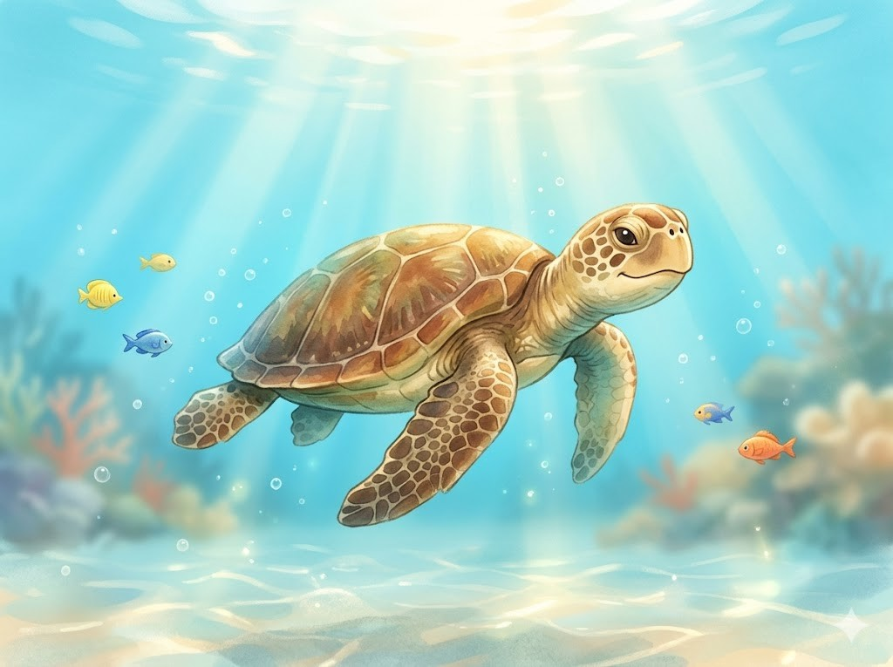
Die MeeresschildkröteIm Meer rund um Kap Verde schwimmen Meeresschildkröten. Sie gleiten ruhig durch das klare Wasser. Mit ihren Flossen rudern sie vorwärts. An den Stränden legen sie ihre Eier in den Sand. Aus den Eiern schlüpfen kleine Schildkröten.
Grüne Wörter für die AppMeeresschildkrötenklare WasserFlossenEier in den Sandschlüpfen
Der BuckelwalIm Meer bei Kap Verde leben große Buckelwale. Sie kommen jedes Jahr zum Kinderkriegen hierher. Ein Buckelwal kann riesig werden. Manchmal springt er aus dem Wasser. Von Booten aus kann man die Wale beobachten.
Grüne Wörter für die AppBuckelwaleriesigspringtaus dem WasserBooten
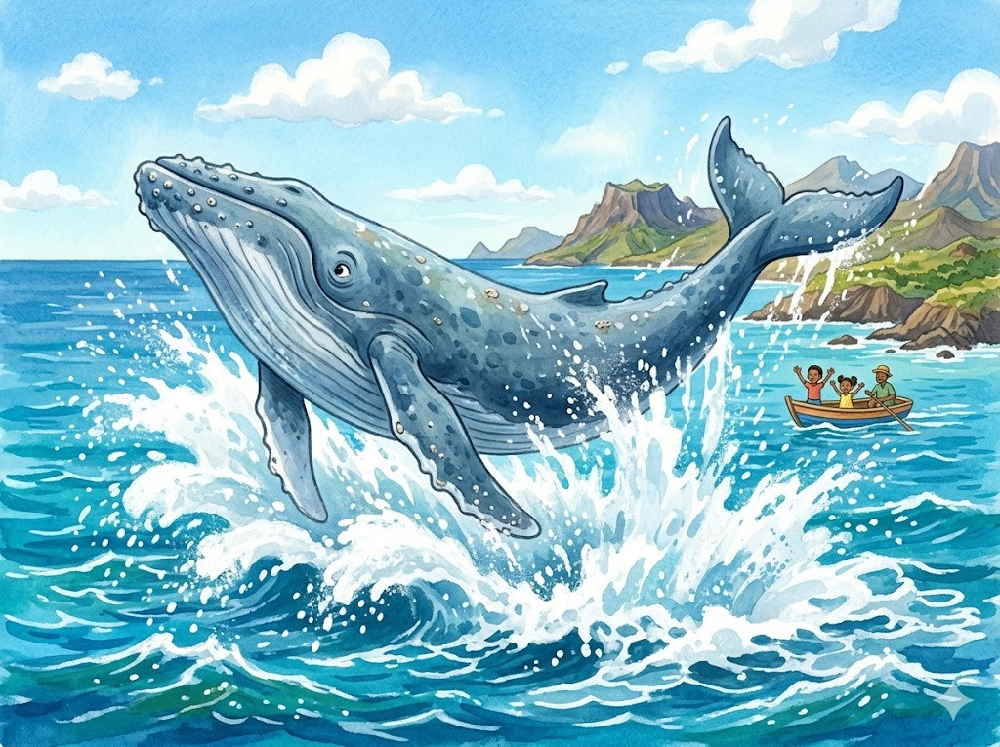
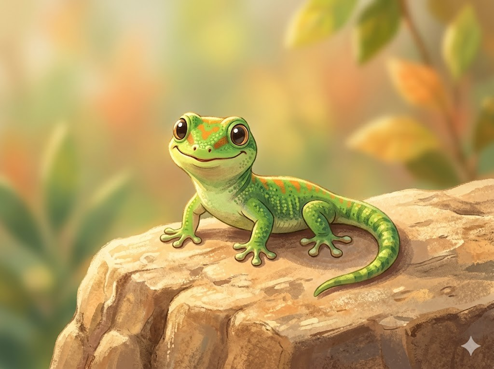
Der GeckoAuf den Inseln leben kleine Geckos. Ein Gecko ist eine flinke Echse. Er klettert sogar an glatten Wänden hoch. Tagsüber sitzt er gern in der Sonne. Geckos fressen am liebsten kleine Insekten.
Grüne Wörter für die AppGeckosflinke Echseklettertin der SonneInsekten
In der App kannst du beim Essen das Foto nehmen oder dein Gericht selbst malen.
CachupaCachupa ist das wichtigste Gericht von Kap Verde. Es ist ein Eintopf aus Mais und Bohnen. Dazu kommen Gemüse und manchmal Fleisch oder Fisch. Der Eintopf kocht sehr lange auf dem Herd. Viele essen Cachupa schon zum Frühstück.
Grüne Wörter für die AppCachupaEintopfMais und BohnenGemüsezum Frühstück
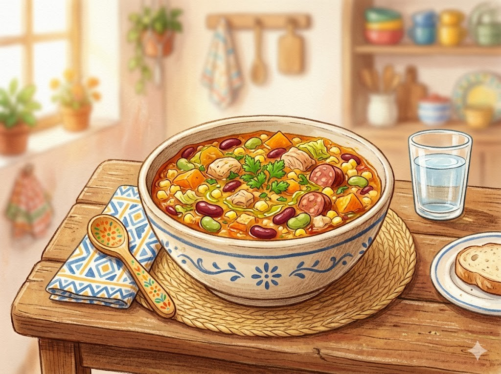
Frischer FischRund um Kap Verde gibt es viel Fisch. Die Fischer fangen ihn früh am Morgen im Meer. Frisch wird er dann auf dem Markt verkauft. Oft isst man den Fisch mit Reis. Dazu schmeckt eine Scheibe Limette.
Grüne Wörter für die AppFischFischerauf dem MarktReisLimette
PastelPastel sind kleine gefüllte Teigtaschen. Sie werden in heißem Fett goldbraun gebacken. Innen sind sie oft mit Thunfisch gefüllt. Manche schmecken auch nach Gemüse. Kinder essen Pastel gern als Snack.
Grüne Wörter für die AppPastelTeigtaschengoldbraunThunfischSnack
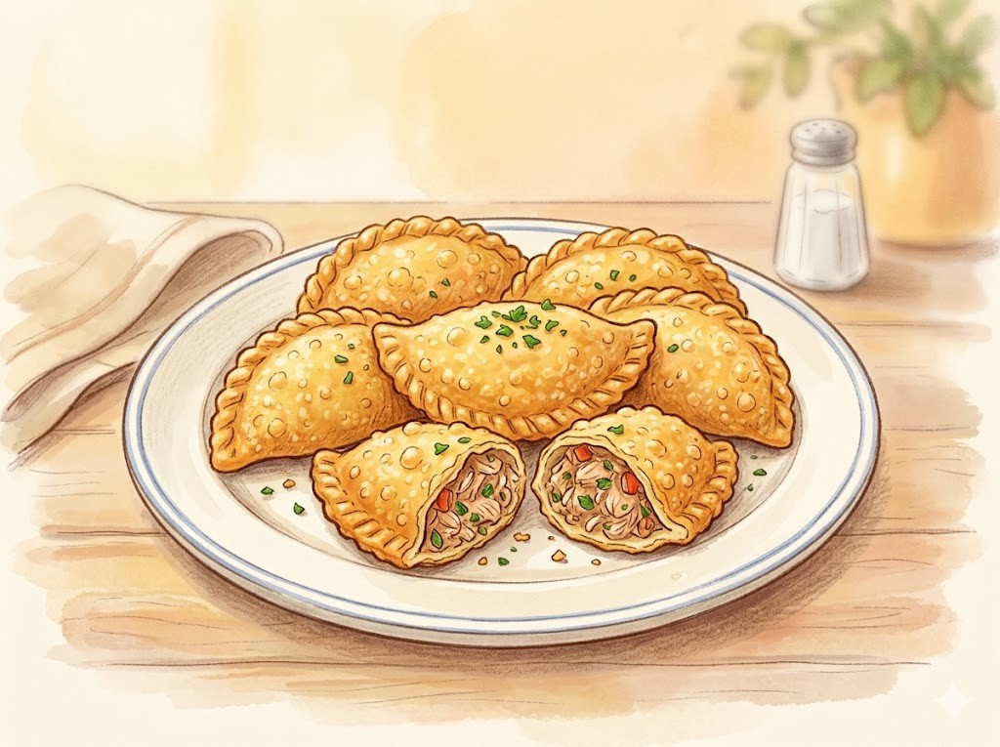
Die Nationalmannschaft von Kap Verde heißt die Blauhaie. Zum ersten Mal hat sich Kap Verde für die WM 2026 qualifiziert. Das kleine Inselland hat dafür sogar große Mannschaften besiegt. Ein bekannter Spieler ist Jamiro Monteiro. Das ganze Land hat groß gefeiert.
Grüne Wörter für die Appdie BlauhaieWM 2026kleine InsellandJamiro Monteirogefeiert
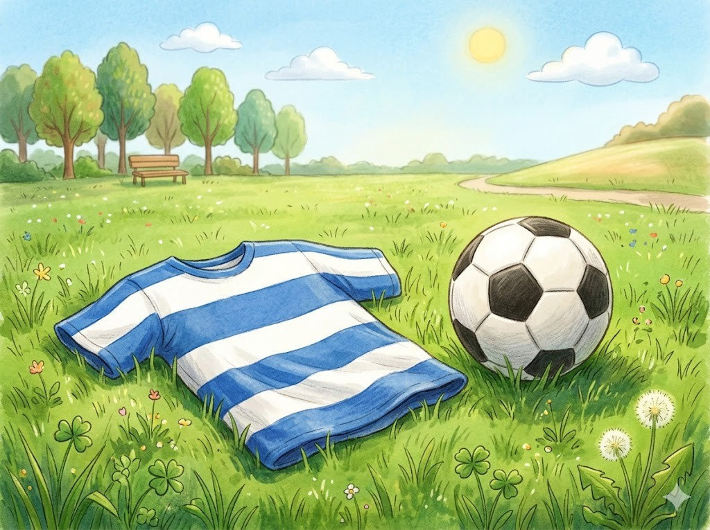
Sprachen und SchuleDie Kinder auf Kap Verde sprechen meist Kreol. Das ist die Sprache der Inseln. In der Schule lernen sie auch Portugiesisch. Beide Sprachen gehören zu ihrem Alltag. So sprechen viele Kinder zwei Sprachen.
Grüne Wörter für die AppKreolSprache der InselnSchulePortugiesischzwei Sprachen
Leben am MeerDas Meer gehört für die Kinder zum Alltag. Nach der Schule gehen viele zum Schwimmen. Manche helfen den Fischern am Strand. Andere spielen am Strand Fußball. Am Abend hört man oft Musik in den Straßen.
Grüne Wörter für die AppMeerSchwimmenFischernam Strand FußballMusik
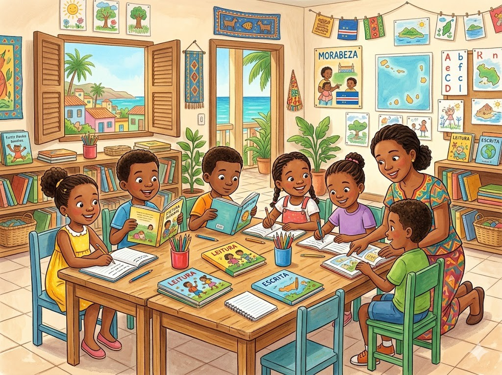